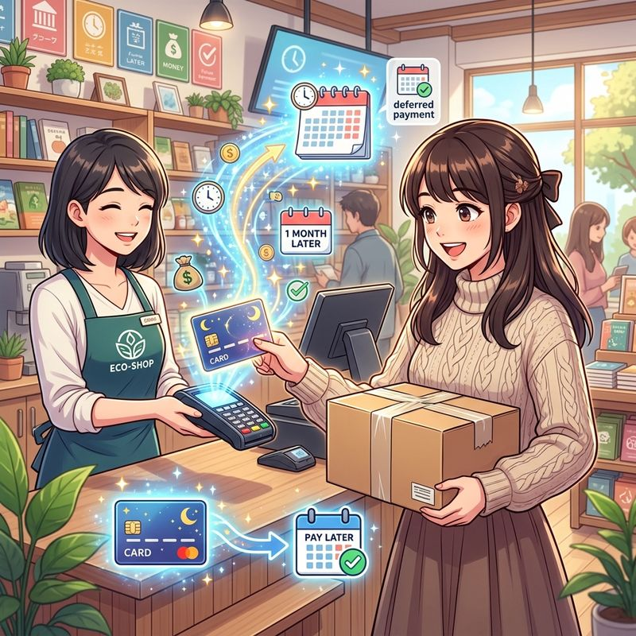
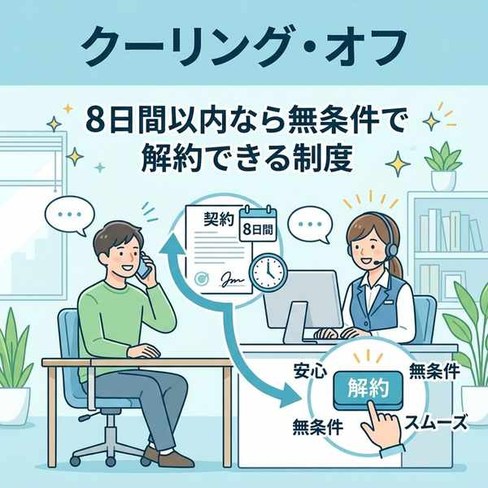
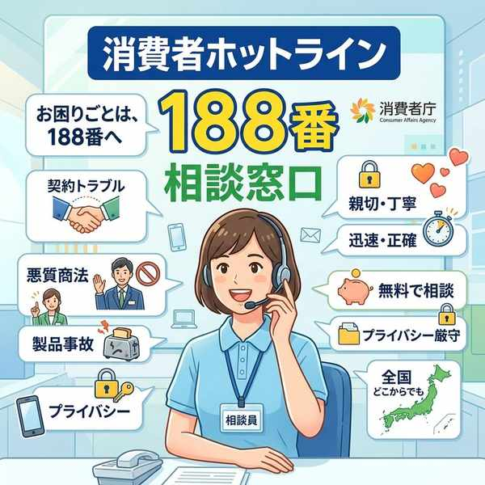
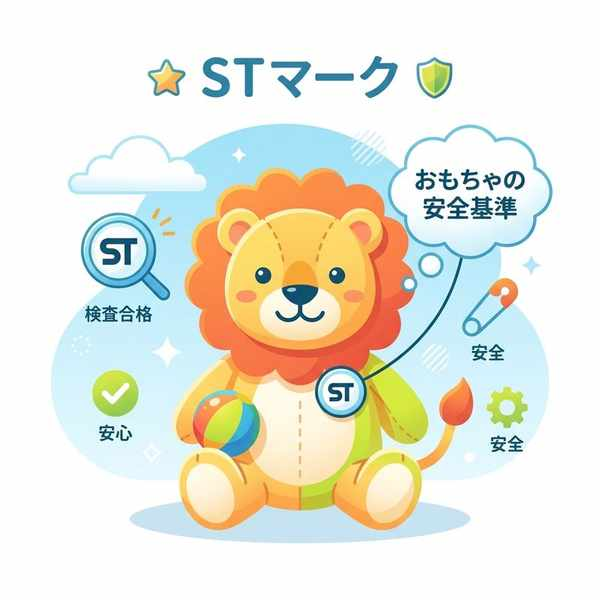
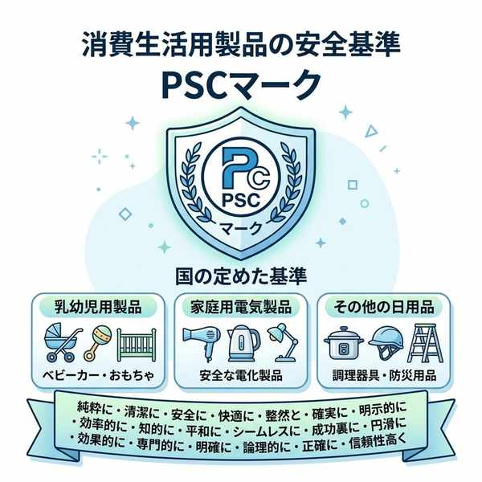
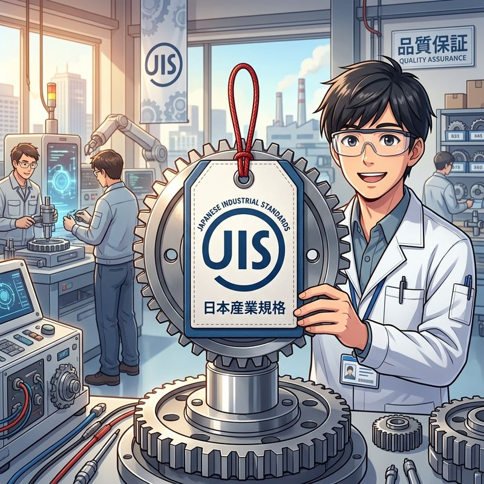

単元10: 消費生活と持続可能な社会、課題解決
現代の多様な消費スタイルとそれに伴う契約のルール、消費者保護の法律や制度（クーリング・オフなど）、環境や社会に優しい「エシカル消費」、そして家庭分野の学習の締めくくりである「課題解決のプロセス」について学びます。契約の仕組みやカードの種類は、テストで非常によく聞かれる頻出テーマです！
1. 商品と売買契約
私たちが購入する「商品」には2つの種類があります。家計においては収入と支出のバランスが重要です。
- 物資（ぶっし）：食品や衣服、本など「形のある」商品。
- サービス：医療、交通、通信（ネット接続）、教育（学習塾）、映画など「形のない」商品。
- 売買契約（ばいばいけいやく）：買い物をするとき、「これを買います」という消費者の意思と、「売ります」という店側の意思が合致することで成立する、法律に基づいた約束事。
- 💡 契約は、契約書にサインをしなくても、口頭（言葉を交わすだけ）で成立します。一度契約が成立すると、自己都合で勝手にやめることはできません。
- 未成年者取消権（みせいねんしゃとりけしけん）：中学生などの未成年者が、保護者（法定代理人）の同意を得ずに高額な売買契約などを結んでしまった場合、後からその契約を取り消すことができる法律上の権利。
2. 多様な決済（支払い）方法
現金以外の支払い（キャッシュレス決済）には、支払うタイミングによって3つのタイプがあります。
- 前払い（プリペイド）：あらかじめ電子マネーをチャージしたり、プリペイドカードを購入して支払う方法。
- 即時払い（デビットカード）：買い物をした瞬間に、登録された自分の銀行口座からすぐに代金が引き落とされるカード決済。
- 後払い（クレジットカード）：手元に現金がなくても商品を手に入れられ、代金は後日口座からまとめて引き落とされるカード決済。信用の上の「三者間契約」です。

キャッシュレス後払い決済のクレジットカード
3. 消費者を守る法律とトラブル対策
① 消費者保護の制度と窓口
- クーリング・オフ制度：訪問販売やキャッチセールスなどで不意に契約してしまった場合、一定期間内（原則8日間以内）であれば、無条件で契約を解除（キャンセル）できる制度。
- ⚠️ 自分から店に行って買った場合や、通信販売（ネットショッピング）には、原則クーリング・オフは適用されません。
- 製造物責任法（PL法）：製品の欠陥が原因で消費者がケガなどをした場合に、メーカー（製造者）に損害賠償を請求できる法律。
- 消費生活センター：消費者トラブルの相談にのってくれる専門機関。消費者ホットライン「188（いやや）番」に電話すると、最寄りの相談窓口につながります。
- 消費者基本法：消費者の権利尊重と自立支援を基本理念とする法律。国の機関として消費者庁があります。
- 国際消費者機構（CI）：消費者の「8つの権利」と「5つの責任」を提唱している国際組織。

一定期間内に無条件解除ができるクーリング・オフ

相談窓口「消費者ホットライン 188」
② 代表的な悪質商法（トラブル）
- キャッチセールス：街頭で「アンケートに答えて」などと呼び止め、営業所などに連れ込んで高額な契約をさせる。
- アポイントメントセールス：電話やメール等で「当選した」などと呼び出し、強引に契約させる。
- マルチ商法：商品を買って会員になり、さらに友人を紹介・加入させることで利益が得られると誘う商法。
- ネガティブ・オプション（送り付け商法）：注文していない商品を一方的に自宅に送りつけ、支払いを要求する。
③ 安全性を示すマーク
- STマーク（Safety Toy）：玩具の安全基準に合格したおもちゃにつく。
- PSCマーク：消費生活用製品安全法に基づき、国の安全基準を満たした製品（ベビーベッド、ライター等）につく。
- JISマーク（日本産業規格）：国の工業規格に合格した工業製品（乾電池、ノート等）につく。

おもちゃの安全「STマーク」

家庭用製品安全「PSCマーク」

日本産業規格「JISマーク」
4. 持続可能な社会への貢献と3R
- エシカル消費（倫理的消費）：価格や品質だけでなく、人、社会、地球環境に配慮した商品を選んで購入する消費行動（例：環境に優しいエコマーク商品を買う）。
- フェアトレード（公平貿易）：発展途上国の農作物や製品を適正な価格で継続して取引し、現地の生産者の自立と生活を支援する貿易の仕組み。
- 消費者市民社会（しょうひしゃしみんしゃかい）：消費者が自分の権利と責任を自覚し、持続可能な社会の実現に向けて積極的に行動する社会。
- 循環型社会と3R：ごみを減らすリデュース（発生抑制）、繰り返し使うリユース（再使用）、資源として再利用するリサイクル（再生利用）により資源を循環させる社会。
5. 家庭科の「課題解決プロセス」
生活をより良くするための学習・実践の手順です。
- 課題の設定：生活の中で解決すべき問題やテーマを見つけ出す。
- 計画の立案：解決のための具体的な手順や計画を立てる。
- 実践と記録：計画を実行し、その様子をメモや写真で記録に残す。
- 評価（ふり返り）：実行後に「計画通りにできたか」「無理はなかったか」「今後の生活に生かせるか」を評価する。
🔥 定期テスト対策・暗記のコツ
① デビットカード と クレジットカード
「デビットカード ➔ 買い物時に銀行口座から即時引き落とし」「クレジットカード ➔ 代金は後払い」。この引き落としタイミングの違いは非常によくテストで狙われます。
② クーリング・オフの適用除外
「自分から店に行って買った場合（店舗販売）」や「通信販売（ネットショップ）」には、原則としてクーリング・オフは使えません。この例外を問う問題がひっかけ問題として頻出します！
③ 課題解決プロセスの実践ステップ
「課題の設定 ➔ 計画 ➔ 実践と記録 ➔ 評価（ふり返り）」。各ステップの名称が、家庭科のプリント穴埋めでよく出題されます。